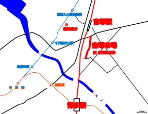

元ネタはScratchというサイトで行っていた「tan-10のつぶやき処(どころ)」です。懐かしい。
以前のブログのデータは一度すべて消去し、改めてのスタートとなります。上が最新のもの、下に行くほど古くなっていきます。
追記 21/2/23：過去のブログを見たいという意見が出てきているため、本公開時(21/3/7)には旧「出張つぶやき処」の内容も公開する予定です。
さて、千早は満喫したので、JRに乗り換えて吉塚に向かいましょう。
吉塚駅で面白いものを見つけました。
 「やまや うまだし缶」です。自販機にて140円で販売。九州で発売されているのここだけらしい。ほんとか？調べてみたところ、すでに羽田空港では発売されてるんだって。
「やまや うまだし缶」です。自販機にて140円で販売。九州で発売されているのここだけらしい。ほんとか？調べてみたところ、すでに羽田空港では発売されてるんだって。
ちょっと気になったので買ってみました。ゴクッ。う～ん。だしだね。だしよ。だしなのよ。ちょっとだけぬるかったかな。もうちょっと設定温度上げてもよかったんじゃないかなって思う。
でもおいしかったですよ。おしるこ的な感じで自販機に置かれるの、嫌いじゃないよ。
あとこれね。
「名所」の定義を疑う。まあ確かに県庁も有名なところだけどさ...w。
さあさあ、そんなことは置いておいて、吉塚商店街に向かいましょう。
というわけでこちら。
「来たよ！！！」って土曜日に言いたかった。
祝日＆微妙な時間だったこともあり、シャッターが締まっているお店もありました。この日はとりあえず様子見としてまっすぐ歩きました。途中立ち話をしている女性の方が珍しそうにわたくしのことを珍しそうにご覧になっていたので、満面の笑みで会釈しました。また足を運ぼうと存ずる。
ちなみに例の「よしよし‼吉塚商店街」はとあるルートから見ることができました。卒業制作展映像部門の一環として作られたものだそうでして、最優秀賞に選ばれたということも記載されてありました。おめでとうございます！そして、お疲れ様でした！！
2021年2月23日、天皇誕生日で学校が休みだったこともあり、「吉塚商店街」に向けてリベンジしてきました！しかし、ただ「吉塚商店街」を訪れてもあっという間に終わってしまいますので、まずは以前から行きたかったところに参ります。
今日は地下鉄箱崎線から西鉄貝塚線に乗り換えることにしましょう。例によって地図を...。
（※今回は路線図基準の地図にしてみました。意見があったらお願いします。）
というわけでやってきました。福岡市東区、西鉄千早駅です。
あれっ？と思った方もいるでしょう。実は、「西鉄千早駅」と JRの「千早駅」の駅舎は一体化していて、西鉄からJRにお乗り換え、なんてこともできるのです。帰りはJRに乗って吉塚に寄っちゃいましょう。
そして千早駅の西側。千早駅を出て正面に見えるこの建物が、「なみきスクエア」です。
この建物、東図書館や東市民センター、音楽・演劇練習場など、何でもかんでも集まっているすごい建物なのです。
中はこんな感じ。
きれいな会議室。このほかにも、和室や視聴覚室、さらには調理室もあります。ここの会議室を借りて「Scratch Day in Fukuoka」を開くのが夢です。夢 で す 。
さて、なぜわたくしがなみきスクエアを訪れたかを書いて今日の分は終わりにします。
中学校時代、夏休み中のとある大会のなんちゃら式で使用したのがこの「なみきスクエア」だったのです（個人情報保護できてるか～！）。
その時、大ホールのステージにて発表することがあって、ホールの裏側に潜入することができたのです。様々な色に光る良く分からないボタン類、どこにあるかもわからないカメラの映像を見ながら何かを調整するスタッフさん、引けば上から照明バトンが落ちてきて大惨事になるであろうロープ（大惨事にならんと思うけどね）...。
なんだろう、“裏方”という言葉が好きなわたくしにとって最高の場所だったと思います。いい経験でした。
吉塚商店街については明日のブログ。写真を撮っていないので文章多めです。また、道中で見つけたしょうもないこともまとめて一つの記事にしますね。
本編に関係ない話をはじめにする、それが我がTangent LABです。（伝統なのです、ごめんね）
「ブログ」の定義とは何でしょうか。「三省堂国語辞典 第七版」より引用させていただきます。
う～ん、コメントが書きこめませんね。このページは 研究員「ブログ」ですけれども、いったいこれは定義通りなのでしょうか...？まあコメントがあったらDMとかマシュマロとかでくださいな。定義にこだわらなくてもまあヨシ！ブログ（名）〔blog←weblog＝web と log〘＝通信日記〙の合成語〕
インターネットで公開する、日記風のホームページ。作成・更新が簡単で、読み手もコメントを書きこめる。
昨日の続きです。（上）を見ていない人は先にそちらから。
嬉しいお知らせ・釣り堀でおサボり中のまぐろスタッフ さんにリツイートされました。土曜日はお疲れさまでした！いつか皆さんに会いたい。
以下、本編です。まさかｯｯ！！！！！嘘!?!?
— 釣り堀でおサボり中のまぐろスタッフ (@tunastaff) February 22, 2021
たんてんさんが上映回に来ようとしてただなんてｯｯ!!!!会いたかった〜!!!!!クソー!!
DM1本頂ければ駅までダッシュで伺いましたのにー!!!!うおおおおおおお、お気持ちだけでも嬉しい!!いつかもう北九州の本部に来てください！いつでも待ってます!!! https://t.co/81HeSFPQjK
博多駅から中洲川端駅まで行き、空港線から箱崎線に乗り換えました。ちなみにJR線と福岡市地下鉄はこんな感じでつながっています。参考までに地図を。  ※この地図はTwitterで言っていたSVGの地図です。Google マップの必要な部分だけをトレースしました。いいねをしてくれた方、ありがとうございます。この悪夢を忘れるためにも、いったんJRから離れることにした。せっかく来た吉塚駅に別れを告げ、また博多駅に戻る。
まだ夕方の塾まで時間がある。今度は箱崎線に乗ろう。
 こちらの駅名標。「Maidashi-Kyudaibyoinmae」を入れるためだけのこのサイズ。はぁ～あ、なんか好きだわぁ。
こちらの駅名標。「Maidashi-Kyudaibyoinmae」を入れるためだけのこのサイズ。はぁ～あ、なんか好きだわぁ。
新サイトになって初めてのブログです。
...ごめんなさい、小説風に書こうと思ったのですが、ここで飽きちゃいました。時々小説調に戻ります。「――次は、博多、博多です。新幹線、鹿児島本線をご利用の方は、次でお乗り換えです――。」
昔から変わらぬ声が次の駅を伝える。久しぶりに乗る地下鉄は、前回乗ったときよりも静かである。
今日 私は、乗ったこともない鹿児島本線に乗り、誰かもわからない魚たちに会いに行く。
また飽きました。この文章が言いたいのは、「停車駅が分からんから路線図をいろんなところに貼れよ」ということです。博多駅。地下鉄から続く階段を上り、JR線に乗り換える。地下鉄に乗るときにnimocaはチャージしていたので、何も考えずにJRの改札を通った。
えっ、と声を漏らしたときにはもう遅かった。電光掲示板には知らない地名が並んでいる。改札を通った後の世界には、路線図が見当たらなかった。
はい。この時察しました。駅から吉塚商店街までの地図をプリントしたはいいものの、家に置いてきてしまったのです。もともと出遅れていたこともあり、このときの時刻が14時55分くらいだったと思うので、あと5分で最終上映が始まるし、あと25分でその上映も終わってしまうのです。さあどうするたんてん君。とりあえず普通列車に乗ればいいやと思い、ホームに向かう。階段を上がっていると、横から駆け足で追い抜いてゆく学生さんたちがいた。発車メロディも鳴り始めた。なんとなく自分も焦ってしまう。とりあえずあの集団についていくことにした。
乗った列車はすぐに動き始めた。地下鉄とはまた違った雰囲気にワクワクする。ドアの上に路線図があることに気づき、この列車がどこに行くのかを確認する。福間行きは...良かった、吉塚駅に止まってくれる...！
安心したのもつかの間、ここにきて気付いた。
「地図が...ない？！」
ご め ん な さ い 。足が痛くなってしまってアウトでしたの。いろいろ察したのでとりあえず写真を撮りました。 吉塚駅です。この雰囲気結構好き。明日のブログに続きます。吉塚駅は 博多駅から一駅であるのにもかかわらず閑散としていた。何となく別世界な感じがする。地図がないからには、歩き回ってでも探すしかない。駅の周りをぐるっと回ってみよう。「ワンチャン」を信じて。
そううまくいくわけもなく、いつの間にかまた吉塚駅に戻っていた。もう15時15分、途中入場もきついな...。そうつぶやきながら、（これはブログのネタになるぞ！）と思っている自分が情けない。
この瞬間、もうあきらめてしまった。
・ドメインを購入するにあたり、サイト構成を簡単にしました。
・ヘッダーが画面についてくるようになりました。
・サイドメニューが右側に来ました。
・フォントが変わりました。Google Fonts より、"Noto Sans"です。
・これまで各室にブログページがありましたが、更新が面倒になったので一つにまとめました。